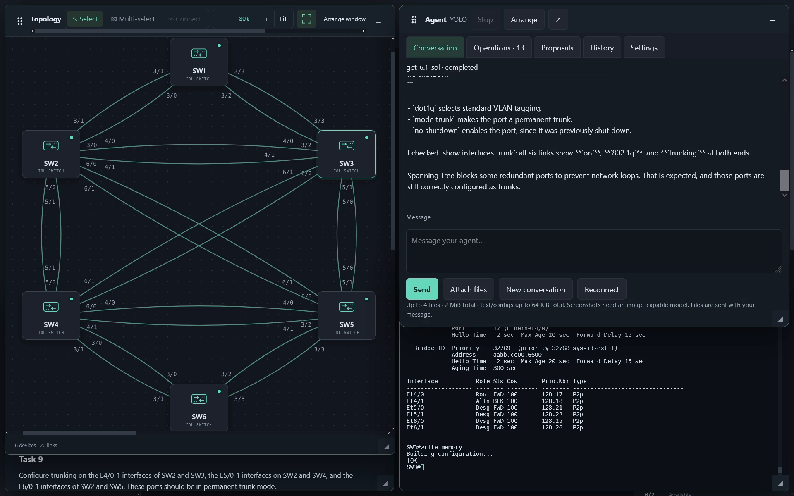
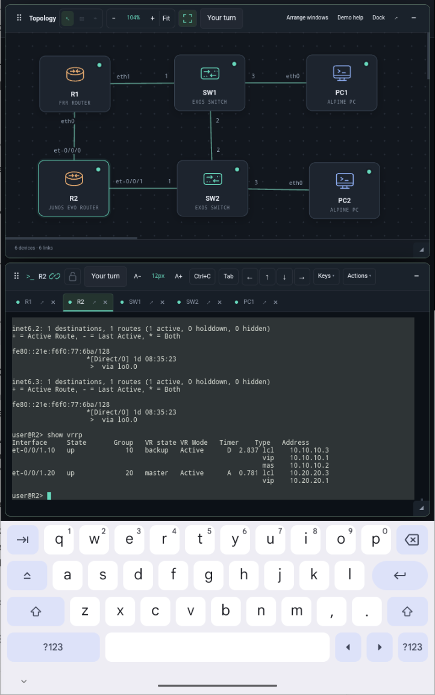
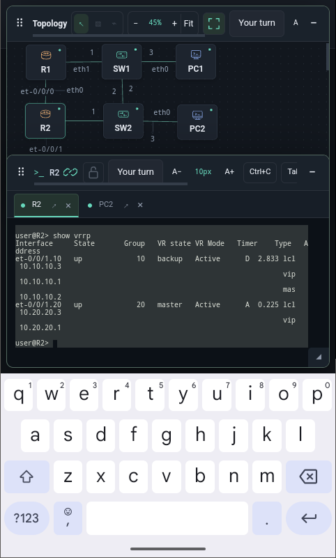

Build a practice lab
FRR routers, an LL2S switch triangle and Linux PCs. Two OSPF/RSTP tasks are intentionally left for the student. Session YOLO is enabled.
OPEN SOURCE. SELF-HOSTED. YOUR LAB.
Build topologies, open consoles and run exercises.
Keep your network in one browser workspace.
Now with an optional AI Agent. Create labs, configure devices and check connectivity
using Ollama or OpenAI. You decide what it can change.
Runs on your Linux host. Works from your desktop, tablet or phone.

View full size ↗SEE IT IN ACTION
See Weblab.Network go from installation to a running multi-vendor lab, with floating consoles and a link-failure exercise, in under two minutes.
The video shows the full workspace. The hosted preview is shared and has restricted controls.
Watch the original recording at its original pace: Docker setup, image upload, topology editing, live consoles, link faults and lab export.
FROM A REQUEST TO A RUNNING LAB
Build a practice lab or configure an existing one with Ollama or OpenAI. The Agent issues the console commands; devices produce the output. In these recordings, the user navigates the workspace and grants permissions without manually typing console commands.
FRR routers, an LL2S switch triangle and Linux PCs. Two OSPF/RSTP tasks are intentionally left for the student. Session YOLO is enabled.
Attach an exercise, review console access, then inspect switch configuration and the Agent’s explanation. The approval dialog offers optional session YOLO.
The Agent is an optional companion for your self-hosted workspace; it is not enabled in the restricted hosted preview. Individual approvals are the default. Agent output needs verification.
OpenAI usage: Agent requests use your signed-in account’s existing Codex / ChatGPT Work allowance, shared with your other usage. Weblab adds no separate quota. You need a plan with Codex CLI access, such as Plus, Pro or an eligible organizational plan. Current plans and limits ↗
Agent installation, permissions and history ↗BRING YOUR OWN IMAGES
LESS WINDOW SWITCHING. MORE NETWORKING.
From your first VLAN to a multi-vendor troubleshooting lab, keep the tools you need within reach.
Float, resize and arrange the topology, consoles and instructions. Keep consoles in tabs or open them side by side. Move selected nodes together, and go fullscreen when it’s time to focus.
Explore the workspace ↗View the same device console from multiple workstations. Input locks and confirmed takeover keep typing coordinated. On a tablet, Ctrl+C, Tab and arrow keys are within reach.
Meet the console tools ↗Open Markdown or text instructions in a floating window. Copy commands into a console and work through the lab without leaving the page.
Read about instructions ↗ View full size ↗
View full size ↗
TABLETS AND PHONES
Arrange topology and consoles on tablets and phones, with shortcuts for keys missing from onscreen keyboards. Keep the map and CLI visible while you type.

View full size ↗
View full size ↗Screenshots of the shared live preview, which has restricted controls.
Try it in your browser ↗BREAK IT. UNDERSTAND IT. FIX IT.
Block traffic in one direction or both while a lab is running. Model a silent link failure, watch a protocol converge, and restore traffic when you’re ready.
For supported IOSv, IOL and FRR profiles, cable controls also request a link-down state at the selected endpoint.
Explore link failure controlsFrame loss and carrier state are separate controls, so you can practice different kinds of failure.

YOUR IMAGES. YOUR TOPOLOGIES.
Upload supported device images, connect the interfaces and start your lab. Mix device families in the same topology to explore how they work together.
Share a topology as JSON, seed fresh Cisco or FRR devices with initial configurations, or export a stopped lab’s saved device storage as a ZIP. Compact vEOS backups preserve the exact disk while reducing repeated data.
Find the right export for your labDevice images and required licenses are supplied by you. Save device configurations before stopping; Alpine PC filesystems are temporary.

FROM SOURCE TO YOUR FIRST LAB
Use an x86-64 Linux host or VM with rootful Docker and Compose. Enable KVM for QEMU devices; vJunos-switch requires a bare-metal Intel host.
Follow the installation guide for Docker, host permissions and remote access.
Installation guide ↗Supply your images, then build a topology or import the starter example.
Try the starter lab ↗Practice routing, switching and failure scenarios. Save your work and share an exercise.
Explore an OSPF exercise ↗git clone https://github.com/weblab-network/weblab.gitDesigned for your own host or a trusted group. Weblab currently has no authentication or per-user isolation; keep the lab service on a trusted network or behind an SSH tunnel.
LOOKING AHEAD
Agent and MCP integration are available now. Classroom accounts and teacher/student roles remain planned, with no delivery date set.
Use the optional Agent window with Ollama or OpenAI, or connect an external assistant through MCP. Create practice topologies, inspect live consoles and approve configuration work. Conversation history, attachments and reference transcript exports keep the work together.
Instructor-led labs with user accounts and roles: teachers control the lab and decide what students can observe or change. Limited student permissions and shared demonstrations would support practice without giving every participant full control.
BUILT TO BE SHARED
Free, open-source tools for hands-on networking.
Try a lab, report an issue, or help improve the project.